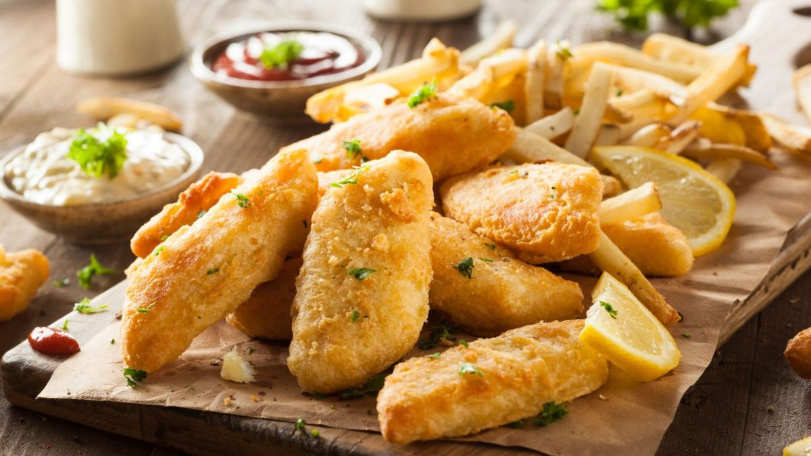

Fish and Chips

Fish and chips is a popular hot dish consisting of fried fish in crispy
batter, served with chips (French fries or wedges). ... Often considered
Britain's national dish, fish and chips is a common take-away food in the
United Kingdom and numerous other countries, particularly in
English-speaking and Commonwealth nations.
Ingredients
For the fish:
- 7 tablespoons (55 grams) all-purpose flour, divided
- 7 tablespoons (55 grams) cornstarch
- 1 teaspoon baking powder
- Sea salt, to taste
- 1 pinch freshly ground black pepper, to taste
- 1/3 cup dark beer, cold
- 4 (7-ounce) fish fillets (thick, white fish)
For the chips:
- 2 pounds potatoes, peeled
- 1 quart (1 liter) vegetable oil , or lard, for frying